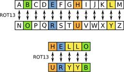
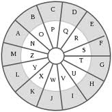

Welcome to a ROT-coder webpage!
By: Angela Lin
Contributors: Laura Wang

Above: A visual explanation to how rot13 works.
Below: A rot13 wheel!

How does this work?
Basically, if you would like to "rot" (short for rotate) your text, please choose
"ROTify"
and the number you wish to rotate your text by.
If you wish to reverse the letters of your text, ROT should be set to
0
, and "Reverse my text!" should be chosen.
If you wish to reverse your text AND rot-ify, please choose "Reverse my text!" and choose the value you wish to rotate your text by.
Enter Text Here:
This text will be changed.
Do you fancy any fancy fonts?
Italicize?
Bold?
Underline?
ROTify
ROT
0
1
2
3
4
5
6
7
8
9
10
11
12
13
14
15
16
17
18
19
20
21
22
23
24
25
26
Reverse my text!